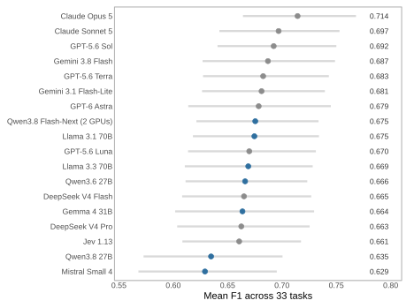
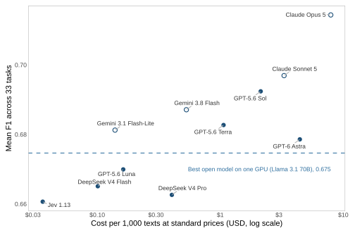
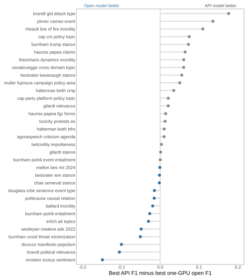
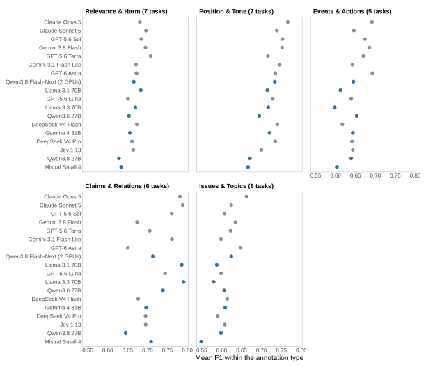
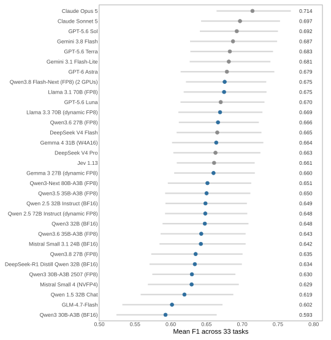

Below, I compare the performance and cost of 31 language models for text classification, 20 with open weights and 11 commercial. I use 33 coding tasks from political science papers, replication archives and public datasets, covering relevance, stance, tone, events, claims and topics. For each task, every model codes the same 100 texts, and I compare its labels with those of human coders.
The main result is that the differences between models are small. Claude Opus 5 has the highest mean F1 (0.714). The best open-weight model, Qwen3.8 Flash-Next (FP8), reaches 0.675 and scores above four of the 11 API models. Differences of a few hundredths in the mean often reverse on individual tasks, so researchers should check the tasks closest to their own before choosing a model.
Overall performance

Cost and performance

API and open models by task

Performance by annotation type

Coding complexity
![Coding complexity. The gap between API and open models grows with coding complexity. On the 18 low-complexity tasks, the best open model on each task scores as high as the best API model; on medium- and high-complexity tasks it trails by about 0.04 F1. High-complexity tasks allow several labels per text or use at least eight labels in practice, and medium-complexity tasks use at least three labels or have a prompt of 300 words or more. The number of labels in practice is the exponential of the entropy of the gold labels, which counts rare labels less than common ones.](figures/fig-recent-complexity.svg)
All 31 models and open-model speed
The first figure repeats the overview for all 31 models. The second compares the speed of the 13 open-weight models for which I recorded generation time.
Overall performance, all models

Quality and generation time
![Quality and generation time. Each point shows one open-weight model: mean F1 against generation time per text, on one RTX PRO 6000 Blackwell GPU. Within each panel, the models coded the same texts with identical settings. The August runs let vLLM process as many texts at once as memory allowed, while the September runs processed at most 16, so times are comparable within a panel but not across panels. The 6 models in the first panel need 0.1 to 1.4 minutes per 1,000 texts, and the 7 in the second 0.6 to 1.4. Load and queue times are excluded.](figures/fig-speed.svg)
The 33 tasks
Each line gives the task, the study or dataset it comes from, and what the model codes.
- agoraspeech criticism agenda (Sermpezis et al. 2026): criticism or agenda, one of 2 categories.
- ballard incivility (Ballard 2022): uncivil, yes or no.
- bestvater kavanaugh stance (Bestvater and Monroe 2023): pro kavanaugh, yes or no.
- bestvater wm stance (Bestvater and Monroe 2023): pro womens march, yes or no.
- brandt gtd attack type (Brandt et al. 2025): attack type, one of 9 categories.
- brandt political relevance (Brandt et al. 2025): relevant, yes or no.
- burnham covid threat minimization (Burnham 2025): threat minimizing, yes or no.
- burnham polnli entailment (Burnham et al. 2025): entails, yes or no.
- burnham polnli event entailment (Burnham et al. 2025): entails, yes or no.
- burnham trump stance (Burnham 2025): stance toward trump, one of 3 categories.
- cap crs policy topic (Policy Agendas Project 2025 and Congressional Research Service products): policy topic, one of 21 categories.
- cap party platform policy topic (Policy Agendas Project 2025): policy topic, one of 21 categories.
- chae semeval stance (Chae and Davidson 2026): stance, one of 3 categories.
- dicocco manifesto populism (Di Cocco and Monechi 2022): populist, yes or no.
- douglass icbe sentence event type (Douglass et al. 2024): event type, one of 5 categories.
- erlich ati topics (Erlich et al. 2022): 7 yes-or-no labels (Activities, Budget, Evaluation, ...).
- gilardi relevance (Gilardi et al. 2023): relevant, yes or no.
- gilardi stance (Gilardi et al. 2023): stance, one of 3 categories.
- halterman keith bfrs (Halterman and Keith 2026): event type, one of 12 categories.
- halterman keith cmp (Halterman and Keith 2026 plus Manifesto Project 2025): policy domain, one of 7 categories.
- haunss papea claims (Haunss et al. 2025): protest claim, one of 28 categories.
- haunss papea fgz forms (Haunss et al. 2025): protest form, one of 7 categories.
- mellon bes mii 2024 (Mellon et al. 2024): issue, one of 50 categories.
- muller fujimura campaign policy area (Müller and Fujimura 2025): policy area, one of 12 categories.
- ornstein scotus sentiment (Ornstein et al. 2025): sentiment, one of 3 categories.
- osnabruegge cross domain topic (Osnabruegge, Ash, and Morelli 2023): policy domain, one of 8 categories.
- plover cameo event (Halterman et al. 2023): event type, one of 18 categories.
- politicause causal relation (Garcia Corral et al. 2024): causal relation, yes or no.
- rheault line of fire incivility (Rheault, Rayment, and Musulan 2019): uncivil, yes or no.
- theocharis dynamics incivility (Theocharis et al. 2020): uncivil, yes or no.
- toxicity protests es (González-Bustamante 2024): toxic, yes or no.
- twitcivility impoliteness (Pendzel et al. 2023): impolite, yes or no.
- wesleyan creative ads 2022 (Zhang et al. 2025): tone, one of 3 categories.
Not evaluated and excluded models
The models below are not ranked. Not evaluated means that I could not run the model, for the reason listed. Excluded means that a run finished but violated the benchmark's rules.
The open-weight models are a selection rather than a complete list. Whether a model runs depends on its weight files, quantization, software support and GPU memory, not only on its size. A missing model therefore says nothing about its quality.
- Mistral Medium 3.5 128B: not evaluated. License eligibility is unresolved; no Hive inference has been submitted.
- GLM-5.3: not evaluated. No supported single-node Hive runtime was verified for the available quantized weights.
- GLM-5.3-Flash: not evaluated. The SM120 NoPE-MLA runtime issue is open; GPU pilot and fit remain untested.
- MiniMax M3 NVFP4: not evaluated. The pinned four-GPU Hive pilot failed before inference: the official NVFP4 runtime has no MoE backend that preserves MiniMax M3's SwiGLU clamp on SM120 RTX PRO 6000 Blackwell GPUs. Zero predictions were produced.
- Kimi K3: not evaluated. Native MXFP4 weight files alone exceed the largest currently listed Hive single-node GPU memory; no multi-node or paid fallback was authorized.
- GPT-OSS 120B (MXFP4): excluded. Job 23393692_0 produced a malformed generated channel in an uncheckpointed task batch without an identifiable item. It cannot be assigned to a frozen text and scored incorrect. Job 23415406 completed a second attempt and retained one separate malformed response with an item ID. Its fully audited 3,400-item output remains exploratory because the first failure cannot be scored under the no-answer-quality-retry rule.
Where the models ran
- API models: called through each provider's API between 10 and 20 September 2026. Requests to OpenAI and Anthropic went through their batch endpoints; the other providers received one request per text.
- Open-weight models: each ran on a single NVIDIA RTX PRO 6000 Blackwell GPU with 96 GB of memory on UC Davis's Hive computing cluster, using vLLM 0.26 at temperature 0. Qwen3.8 Flash-Next needed two of these GPUs and a development version of vLLM.
- Settings: reasoning is disabled where a model allows it and otherwise set to its lowest level. Every model may return at most 256 tokens, except Jev 1.13, which returns a choice among the labels rather than free text.
- Not tested: the API models with extended reasoning, which raises cost and response time, and the largest open-weight models (Kimi K3, GLM-5.3 and MiniMax M3), which do not run on this hardware. The top scores on this page may therefore understate what the strongest configurations of these models reach.
Methods and limitations
Sample. For each task, I draw 100 texts by hashing task and item identifiers with seed 20260910. Every model receives the same texts, gold labels and prompts. I reuse earlier predictions only when their inputs and settings match exactly.
Scoring. For binary tasks, I use the F1 score for the positive class. For tasks with several binary labels, I average the per-label F1 scores. For single-label categorical tasks, I use macro F1, which gives each class equal weight. A class that appears in neither the gold labels nor the predictions receives an F1 of 0 by convention; that zero says nothing about the model. Unusable answers count as incorrect, and I record infrastructure failures separately.
Limits. These results describe 33 tasks. Most tasks come from published datasets, so some texts or labels may have appeared in the models' training data, which would raise their scores; I cannot rule this out. Researchers should validate candidate models on labeled examples from their own task before using them at scale.
How to cite
Hilbig, Hanno. 2026. Political Science LLM Benchmark. Results as of September 2026. https://www.hannohilbig.com/llm-benchmark/.